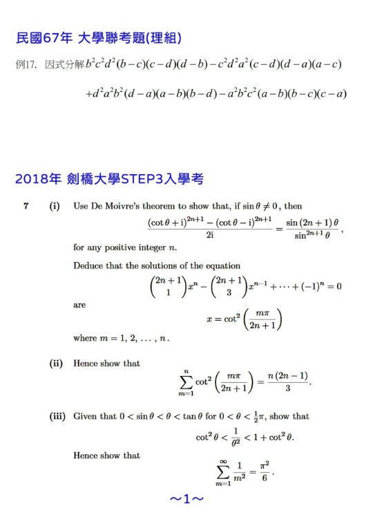
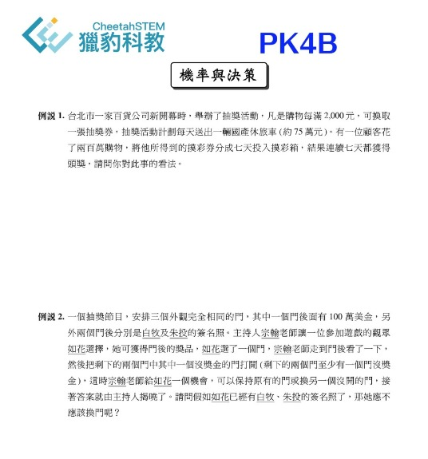

獵豹要回答的，不只是下一張考卷，而是下一個階段、下一種能力、下一條更高的路。
一頁認識獵豹
獵豹把孩子帶進更高層次的數學世界。
獵豹不是一般補習班，而是以數學為核心的長線培養系統。從思考、推理、結構與抽象能力出發，延伸到資優、升學、競賽與更長遠的發展，幫孩子累積真正能走遠的底層能力。
以數學為主幹
從小學拔尖到高中深度訓練，主軸清楚，不走零碎堆課。
訓練高階思考
不只教解法，更訓練分析、組織、判斷與抽象化能力。
長線而非短跑
兼顧資優、升學、競賽與未來選擇權，不只看眼前一張成績單。
用高觀點課程、專家思維、科學化訓練與高品質同儕環境，幫孩子持續往上走。
真正的領先，不是暫時超前，而是孩子未來還能一直學、一直想、一直往更高處走。
第一次接觸獵豹的家長，常常卡在這幾個問題
很多家庭並不是不重視孩子，而是資訊太多、方向太散，不知道什麼才是真正對孩子長期有價值的選擇。
孩子成績不錯，但下一步不清楚
眼前看起來都還順，可是再往前就開始分岔：資優鑑定、競賽、升學、超前學習，到底該怎麼排先後，怎麼避免走冤枉路。
擔心只是刷題，最後走不長遠
短期成績可以靠反覆練習撐起來，但真正讓孩子在更高階段繼續站得住的，是思考品質、理解深度與長期訓練習慣。
不知道該選短期成效，還是長線培養
許多家長想要的是兩者兼顧，但需要一個有系統的教學者，知道不同年齡、不同程度、不同目標，該如何安排節奏。
獵豹到底在做什麼
用最白話的方式說，獵豹是在做一件事：以數學為核心，培養孩子往上走所需要的高階能力。
數學在獵豹不是單一學科，而是訓練思考、推理、結構、抽象化能力的主軸。孩子在這裡學到的，不只是會解幾題，而是逐步建立面對陌生問題時仍能分析、拆解、判斷與前進的能力。
因此，獵豹的定位不是「把某一段進度補完」，而是用數學主幹串起孩子的資優發展、升學準備、競賽能力與未來選擇權。這也是為什麼很多家長走進來時，原本只是想找一門課，最後卻發現自己真正需要的是一套長線系統。
核心主幹
數學能力與思維訓練
向外延伸
資優、升學、競賽、長線發展
最終目標
讓孩子擁有更大的選擇權與更高的上限
獵豹和一般補習班，差異在哪裡
這裡不只是把題目教得更難，而是整體教學觀點完全不同。
高觀點課程
課程設計不是追著眼前考試跑，而是先看孩子未來會面對什麼層級的問題，再反推現在該建立哪些能力。教學有高度，路徑才不會零碎。
專家思維
獵豹重視的不只是答案，而是思考的切角、問題的結構與判斷的品質。孩子學到的是高手怎麼看題、怎麼切入、怎麼建立觀點。
科學化訓練
真正有效的訓練，不是無止盡地刷題，而是有節奏地安排難度、視野與題型變化。該加深、該加廣、該轉換層次，獵豹有明確方法。
高品質同儕與學習環境
孩子會被環境拉高。當教室裡的同學願意思考、敢挑戰、重視標準與深度，學習不再只是個人苦撐，而是進入會互相推動的成長場域。
獵豹的學習理念
獵豹相信，真正有價值的教育，不只是讓孩子現在比較強，而是讓他未來還能一直變強。
很多真正走得遠的孩子，不是最早發光的那一個，而是願意接受挑戰、願意被要求、願意長期累積的人。
如果一堂課永遠只有熟悉感，孩子很難真正成長。適度的不容易，往往正是程度提升的開始。
獵豹看重的是長期競爭力。分數可以是結果，但不是全部；更重要的是孩子未來面對更難世界時，還有沒有能力繼續往前。
先用兩支短片，快速理解獵豹談的資優數學
如果你想先用更直覺的方式理解獵豹的教育語言，這兩支影片可以先幫你建立基本觀念，再往下看課程路徑與成果會更清楚。
什麼是資優數學？
先釐清獵豹所說的資優數學，不只是題目比較難，而是思考層次、訓練方式與長線發展的整體概念。
資優數學就是競賽數學嗎？
這支影片把家長最常混淆的問題拆開來說，幫你分清楚競賽、拔尖、長線能力培養之間的關係。
課程路徑不是一堆代號，而是一條看得懂的成長地圖
先看階段與方向，再看課程系列。獵豹的課程主幹清楚，家長比較容易做長線規劃。
基礎扎根期
先把數感、邏輯、表達與解題習慣打穩，讓孩子不只會算，開始會想、會整理、會把思路說清楚。
對應系列：P 系列拔尖銜接期
從課綱能力往資優視角提升，逐步建立更完整的結構、抽象理解與更高階的解題觀點。
對應系列：J 系列、FJ 系列、GGB 入門進階挑戰期
孩子開始面對更有深度的數學內容、幾何視野與多變題型，為資優、升學與競賽能力打開上限。
對應系列：S 系列、GGB 系列、FA00 銜接訓練高階競賽期
針對具備企圖心與基礎的孩子，進一步挑戰 AMC、AIME 與更高層級的數學訓練，讓能力真正長到國際標準。
對應系列：AMC / AIME、競賽深化、高手訓練


獵豹不只教課，也持續談教育
對獵豹來說，教育不是只發課表。獵豹持續輸出自己的觀點，幫家長理解什麼是有效學習、什麼是長線布局、什麼才是真正的理解。

數學的逆襲
不要再把數學只當成考試工具。這篇文章談的是數學能力如何真正回到理解世界、建立判斷與思考深度的核心位置。
閱讀文章
獵豹數學教得太深嗎？
這篇文章回應許多家長最常見的疑問：高標準與高難度的安排，到底是在拔苗助長，還是在幫孩子建立真正走得遠的能力。
閱讀文章
如何有效率地訓練孩子邏輯、分析與推理能力？
從獵豹在小學階段就引入組合學的做法出發，談孩子的邏輯、分析、推理與程式基礎，為什麼需要更早被系統性建立。
閱讀文章什麼樣的孩子與家庭，適合獵豹
獵豹不是排斥誰，而是希望家長能更快判斷：這裡的節奏、標準與理念，是否是你們真正想要的。
願意思考，也願意面對不容易
孩子不必什麼都會，但需要願意被挑戰、願意練出更高層次的理解，而不是只想待在舒服區。
家長重視長期能力，不只短期分數
如果你在意的不只是這次段考，而是孩子未來在資優、升學與更高舞台上的持續競爭力，獵豹會比較適合。
希望孩子走得更高更遠，而不是只求眼前過關
獵豹擅長的是把有潛力的孩子放進長線系統，讓他一步一步走向更大的可能，而不是只處理眼前的一次過關。
願意進入有標準、有深度的學習環境
獵豹重視課程品質、訓練標準與同儕環境。如果你希望孩子在一個要求真實、節奏明確的場域成長，會很合適。
家長常問的，
也是我們最重視的問題
資優數學教育，不只是把課程變難，也不是把孩子一直往前推。
真正重要的是：孩子是否在合適的節奏中，被帶進更深的理解、更高的標準，以及更長遠的成長路徑。
如果你也有這些疑問，也許下面這些回答，能幫助你更快理解獵豹在做什麼。
不是。
真正有價值的資優數學教育，不只是把進度往前拉，也不只是把題目變難。
更重要的是，孩子是否開始學會觀察結構、理解原理、建立推理能力，並在面對陌生問題時仍然找得到方向。
如果只是提早學、加快學，卻沒有建立更深的理解，那樣的「超前」通常走不遠。
適合不適合，關鍵不只在起點，而在孩子是否願意思考、願意接受挑戰。
獵豹並不只看孩子現在是不是已經非常強，而更看重他有沒有持續成長的可能。
孩子不必一開始就是高手，但如果他願意往更高的標準靠近，願意在適當引導下慢慢突破，那就有機會在這樣的環境中長出真正的實力。
會不會打擊信心，不是由「難」本身決定，而是由難度是否安排得合適決定。
太簡單，孩子只會停留在舒適區；太難，又容易挫折。
好的訓練，應該讓孩子在可承受、可突破的邊緣持續前進：有挑戰，但不是毫無希望；需要努力，但不是一再失敗。
當孩子在這樣的節奏中累積突破經驗，信心反而會建立得更真實。
不一定每個孩子都要走高強度競賽路線，但對許多以理工、醫學、頂大科系為目標的孩子來說，適度的加深加廣與競賽層次訓練，往往很有幫助。
因為這類訓練能幫助孩子把理解做深、把思考做活，也更能應對近年越來越重視理解、表達與綜合能力的考試與學習歷程。
重點不是「為比賽而比賽」，而是選擇高品質、對長線能力真的有幫助的學習內容。
不是。
當然，有些孩子天分特別突出；但更多能長期走得遠的孩子，靠的不是一開始就遙遙領先，而是持續訓練出來的理解力、專注力、思考習慣與抗壓性。
資優教育真正珍貴的地方，不是把少數天才挑出來，而是幫助有潛力的孩子，在對的方法中逐漸走向更高層次。
是否有效，不取決於是不是網課，而取決於課程設計、師資能力、教材品質與學習互動是否到位。
好的網路數學課，不只是把實體課搬上螢幕，而是要更重視講解節奏、畫面呈現、重點整理、互動品質與課後延伸。
如果這些設計成熟，網路學習不但可以突破地域限制，也能讓孩子接觸更高水準的師資與同儕環境。
不一定。
家長最重要的角色，通常不是代替老師講題，而是幫孩子建立穩定的學習節奏、看懂孩子當前的狀態，並在該鼓勵、該等待、該調整時給出合適支持。
很多時候，真正重要的不是家長能不能解題，而是能不能陪孩子一起相信：有些能力需要時間長出來，不能只用眼前一次表現去定義孩子。
不只是更高的分數，也不只是某一次榜單上的名字。
我們更希望孩子帶走的是：面對困難時仍願意思考的習慣、理解新問題時的能力、對高標準的熟悉，以及未來走向更高層次學習時所需要的底氣。
真正能陪孩子走遠的，從來不只是眼前的一次表現，而是他是否已經慢慢長出一套屬於自己的能力系統。
孩子都是熱愛有挑戰的學習，而且孩子往往在思考難題的過程中，得到更多進步和自我肯定。
讓孩子感到壓力的往往是家長對於成績的要求還有互相的比較。建議家長放寬心，給孩子慢慢調整和進步的時間，便會築起那一道別人無法超越的數學護城河。
下一步
如果你已經大致理解獵豹，接下來可以往這三條路走
先看課程、先看成果、先看觀點都可以。若想更快判斷孩子目前適合哪一條路，也可以直接預約教育諮詢。